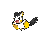

 英語版の図鑑説明
英語版の図鑑説明
This Pokémon absolutely loves sweet berries. Sometimes it stuffs its cheeks full of so much food that it can’t fly properly.
日本語訳
甘い木の実が大好き。頬袋に詰め込みすぎて飛べなくなることもある。
 この図鑑文に出てくる英単語
この図鑑文に出てくる英単語
| 英単語 | 意味 | 品詞 | レベル |
|---|---|---|---|
| absolutely | 完全に、絶対に | 副詞 | 高校 |
| sweet | 甘い | 形容詞 | 中1 |
| berries | 木の実(複数形) | 名詞 | 高校 |
| stuffs | つめこむ | 動詞 | 大学 |
| cheeks | ほお(複数形) | 名詞 | 高校 |
| full | いっぱいの | 形容詞 | 中1 |
| properly | きちんと | 副詞 | 高校 |
文法ポイント it stuffs は現在形。図鑑では、そのポケモンがふだんから繰り返している習性を現在形で表します。主語が it なので動詞に s がついています。
 エモンガの種族値
エモンガの種族値
HP55
こうげき75
ぼうぎょ60
とくこう75
とくぼう60
すばやさ103
合計 428
 エモンガの英語名をシェア
エモンガの英語名をシェア
「Emolga」の由来、友だちは知ってるかな？
 よくある質問
よくある質問
- エモンガの英語名は？
- エモンガの英語名は「Emolga」です。
- エモンガは英語版の図鑑でどう説明されている？
- 「This Pokémon absolutely loves sweet berries. Sometimes it stuffs its cheeks full of so much food that it can’t fly properly.」と書かれています。日本語にすると「甘い木の実が大好き。頬袋に詰め込みすぎて飛べなくなることもある。」という意味です。
エモンガは第5世代（イッシュ地方）のポケモンです。第5世代（イッシュ地方）の英語名一覧 →